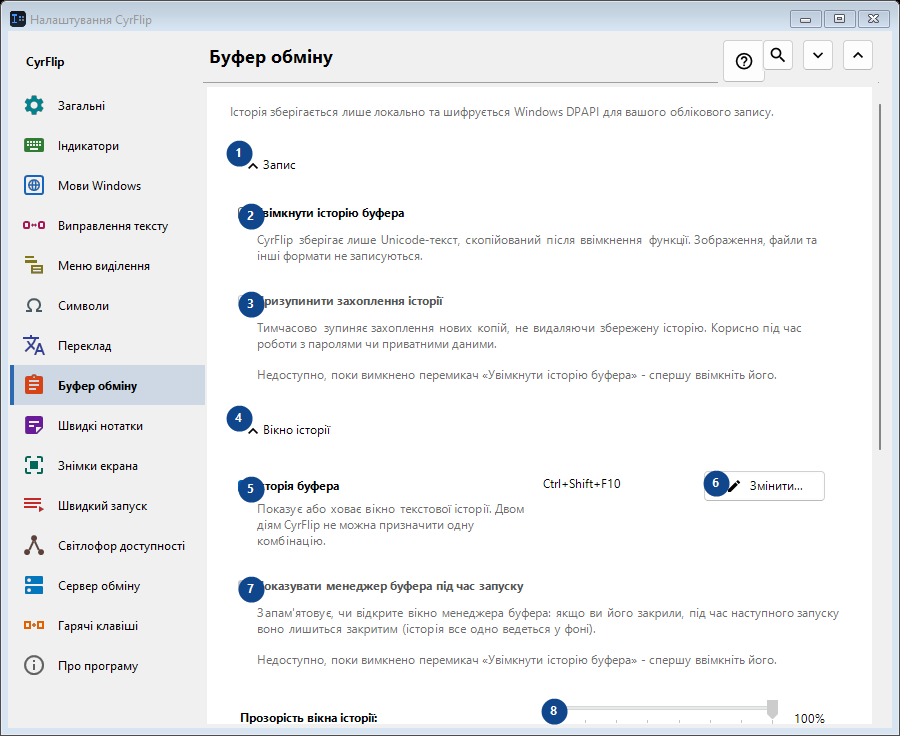
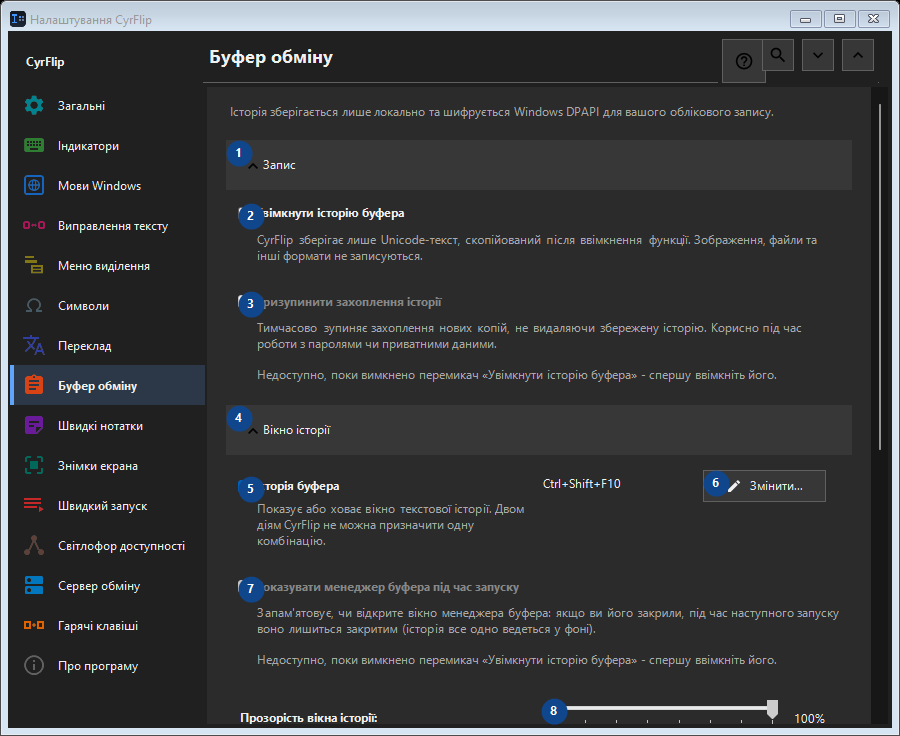

Буфер обміну
Для чого це вікно
Історія зберігається лише локально та шифрується Windows DPAPI для вашого облікового запису.


Порядок дій
Налаштування застосовуються одразу. Обов’язкового порядку немає; користуйтеся групами нижче.
Елементи
1. Запис
Скористайтеся командою, коли потрібна вказана дія. Прочитайте запит підтвердження перед згодою.
Ваші сполучення клавіш2. Увімкнути історію буфера
CyrFlip зберігає лише Unicode-текст, скопійований після ввімкнення функції. Зображення, файли та інші формати не записуються.
Ваші сполучення клавіш3. Призупинити захоплення історії
Недоступно, поки вимкнено перемикач «Увімкнути історію буфера» - спершу ввімкніть його. Елемент зараз недоступний. Спочатку ввімкніть функцію або виберіть запис.
Ваші сполучення клавіш4. Вікно історії
Скористайтеся командою, коли потрібна вказана дія. Прочитайте запит підтвердження перед згодою.
Ваші сполучення клавіш5. Історія буфера
Показує або ховає вікно текстової історії. Двом діям CyrFlip не можна призначити одну комбінацію.
Ваші сполучення клавіш6. Змінити - Історія буфера
Скористайтеся командою, коли потрібна вказана дія. Прочитайте запит підтвердження перед згодою.
Ваші сполучення клавіш7. Показувати менеджер буфера під час запуску
Недоступно, поки вимкнено перемикач «Увімкнути історію буфера» - спершу ввімкніть його. Елемент зараз недоступний. Спочатку ввімкніть функцію або виберіть запис.
Ваші сполучення клавіш8. Прозорість вікна історії
Недоступно, поки вимкнено перемикач «Увімкнути історію буфера» - спершу ввімкніть його. Елемент зараз недоступний. Спочатку ввімкніть функцію або виберіть запис.
Ваші сполучення клавіш9. Пошук в історії
Відкриває окреме вікно для пошуку за фрагментом тексту. Для пошуку введіть щонайменше три символи.
Ваші сполучення клавіш10. Очищення
Скористайтеся командою, коли потрібна вказана дія. Прочитайте запит підтвердження перед згодою.
Ваші сполучення клавіш11. Очистити всю історію
Видаляє всі записи з пам'яті та зашифрованого локального файлу. Цю дію не можна скасувати.
Ваші сполучення клавіш12. Перенесення на інший комп'ютер
Скористайтеся командою, коли потрібна вказана дія. Прочитайте запит підтвердження перед згодою.
Ваші сполучення клавіш13. Експортувати...
Один відкритий текстовий файл із нотатками та вибраною історією буфера: його можна прочитати в будь-якому редакторі чи на телефоні та імпортувати в CyrFlip на іншому комп'ютері. Файл не шифрується. Імпорт показує, що буде додано, і нічого не видаляє.
Ваші сполучення клавіш14. Імпортувати...
Скористайтеся командою, коли потрібна вказана дія. Прочитайте запит підтвердження перед згодою.
Ваші сполучення клавіш